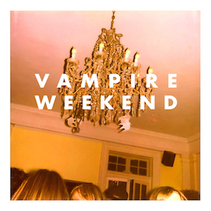

The Moldy Peaches were an indie group founded by Adam Green and Kimya Dawson. Leading proponents of the anti-folk scene, the band has been on hiatus since 2004.
WikipediaThey Might Be Giants is an American alternative rock band formed in 1982 by John Flansburgh and John Linnell.
WikipediaThe Black Keys is an American rock band formed in Akron, Ohio, in 2001. The group consists of Dan Auerbach and Patrick Carney.
WikipediaSteven Paul "Elliott" Smith was an American singer, songwriter, and multi-instrumentalist. Smith was born in Omaha, Nebraska, raised primarily in Texas, and lived much of his life in Portland, Oregon, where he first gained popularity.
WikipediaThe Beatles were an English rock band formed in Liverpool in 1960. With a line-up comprising John Lennon, Paul McCartney, George Harrison and Ringo Starr, they are often regarded as the most influential band of all time.
WikipediaThe White Stripes were an American rock duo formed in 1997 in Detroit, Michigan. The group consisted of Jack White and Meg White. After releasing several singles and three albums within the Detroit music scene, The White Stripes rose to prominence in 2002, as part of the garage rock revival scene.
Wikipedia
Vampire Weekend is an American indie rock band from New York City, formed in 2006 and currently signed to Columbia Records. The band was formed by lead vocalist and guitarist Ezra Koenig, multi-instrumentalist Rostam Batmanglij, drummer Chris Tomson, and bassist Chris Baio.
WikipediaMeat Puppets are an American rock band formed in January 1980 in Phoenix, Arizona. The group's original lineup was Curt Kirkwood, his brother Cris Kirkwood, and Derrick Bostrom. The Kirkwood brothers met Bostrom while attending Brophy Prep High School in Phoenix.
WikipediaTool is an American rock band from Los Angeles. Formed in 1990, the group's line-up includes drummer Danny Carey, guitarist Adam Jones, and vocalist Maynard James Keenan. Justin Chancellor has been the band's bassist since 1995, replacing their original bassist Paul D'Amour.
WikipediaR.E.M. was an American rock band from Athens, Georgia, formed in 1980 by drummer Bill Berry, guitarist Peter Buck, bassist Mike Mills, and lead vocalist Michael Stipe. Additionally, many liner notes from the band's albums list attorney Bertis Downs and manager Jefferson Holt as non-musical members.
WikipediaThe Smiths were an English rock band formed in Manchester in 1982. The group consisted of vocalist Morrissey, guitarist Johnny Marr, bassist Andy Rourke and drummer Mike Joyce. Critics have called them one of the most important bands to emerge from the British independent music scene of the 1980s.
Wikipedia
The Shins is an American indie rock band formed in Albuquerque, New Mexico in 1996. The band's current lineup consists of James Mercer, Jon Sortland, Mark Watrous, Casey Foubert, Yuuki Matthews, and Patti King. The band is based in Portland, Oregon.
WikipediaNeutral Milk Hotel was an American indie rock band formed in Ruston, Louisiana by singer, guitarist, and songwriter Jeff Mangum in the late 1980s. The band is noted for its experimental sound, abstract lyrics, and eclectic instrumentation.
WikipediaDelta Spirit is an American rock band from California. The group consists of Jonathan Jameson, Brandon Young, Matthew Vasquez, Kelly Winrich, and William McLaren. The band released their fourth album, Into the Wide, on 9 September 2014.
Wikipedia
Dr. Dog is an American rock band based in Philadelphia, Pennsylvania, United States. Its lineup consists of Toby Leaman, Scott McMicken, Frank McElroy, Zach Miller, and Eric Slick. Lead vocal duties are shared between Leaman and McMicken, with all members contributing harmonies.
Wikipedia